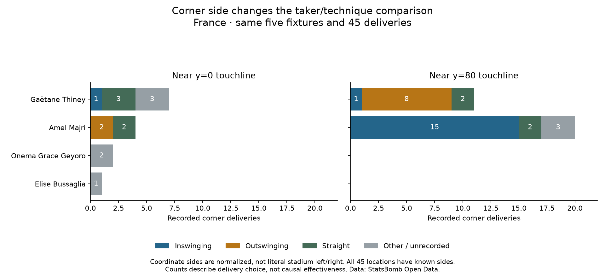

Football analyst training · Phase 2 · Lesson 41
Same player does not always mean the same situation.
We now add which recorded side the corner starts from, keeping the same deliveries and outcomes.
Completed assignment
Majri's 15 inswingers come from one side; her two outswingers come from the other. Comparing her delivery types therefore also changes side.

What to understand
Previously, two player/match groups contained both types. Adding side separates those deliveries into different groups. We have no observed both-type comparison holding all three factors fixed.
This does not mean one technique has no effect. It means these records do not directly answer that comparison. A more complex model would need extra assumptions; it cannot invent the missing examples.
Use precise wording
“The delivery choices occur in different contexts, so we cannot identify a preferred technique from these data alone.” We can still report the descriptive counts.
Side labels use normalized coordinates near y=0 and y=80, not stadium compass directions. All 45 start locations have known sides here; missing technique labels remain unrecorded.
Run 41_corner_side_context.py in Spyder. The worked assignment is complete with assistance. Ask for a deeper explanation of any new concept.